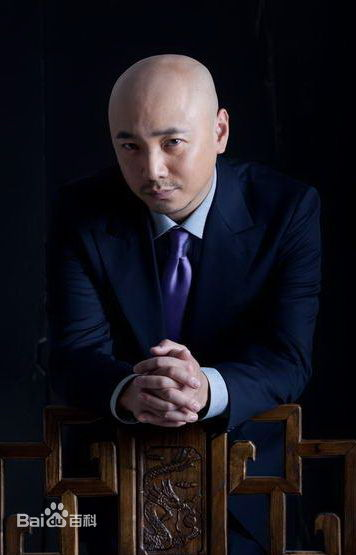

徐峥，1972年4月18日出生于上海，中国内地男演员、导演。1994年毕业于上海戏剧学院。1998年出演话剧《股票的颜色》获得第十届白玉兰戏剧奖最佳男主角奖。2000年凭借古装剧《春光灿烂猪八戒》中猪八戒一角走红；2002年，主演古装剧《李卫当官》。2007年主演贺岁喜剧电影《爱情呼叫转移》。2010年主演电影《人在囧途》。2012年，导演处女作《泰囧》以上映5天票房突破3亿刷新华语片首周票房纪录，以总票房12.69亿夺得亚洲电影大奖“亚洲最高票房”。2013年，主演的电影《无人区》入 ...>>>
| 目录 |
徐峥，1972年4月18日出生于上海，中国内地男演员、导演。1994年毕业于上海戏剧学院。
1998年出演话剧《股票的颜色》获得第十届白玉兰戏剧奖最佳男主角奖 [1] 。2000年凭借古装剧《春光灿烂猪八戒》中猪八戒一角走红 [1] ；2002年，主演古装剧《李卫当官》 [2]
2007年主演贺岁喜剧电影《爱情呼叫转移》 [3] 。2010年主演电影《人在囧途》 [4] 。2012年，导演处女作《泰囧》以上映5天票房突破3亿刷新华语片首周票房纪录，以总票房12.69亿夺得亚洲电影大奖“亚洲最高票房” [5] 。2013年，主演的电影《无人区》入围第64届柏林国际电影节主竞赛单元影片 [6] 。2014年，担任监制并主演年度烧脑心理悬疑片《催眠大师》 [7] ，同年主演的电影《心花路放》票房突破11亿 [8] 。2015年，自导自演的喜剧片《港囧》票房突破16亿。 [9]
2016年2月8日，监制的动画电影《年兽大作战》全国上映 [10]
徐峥从上小学，就开始在学校组织的话剧表演中挑大梁。 中学时，由于学校旁边就是上海人艺，所以他经常旷课去看戏，慢慢与剧组混熟了，开始有了登台表演的机会。 [1] [13] 1990年，徐峥考入上海戏剧学院
1994年，徐峥大学毕业之后，进入上海话剧艺术中心，参演《陪读夫人》、《商鞅》、《陪读》等话剧作品 [2] 。1998年，凭借话剧《股票的颜色》获得第十届白玉兰戏剧奖最佳男主角奖 [1] 。
2012年，主演电视剧《大男当婚》 [17] 。12月，徐峥自编自导自演的喜剧电影《泰囧》上映22天累计票房突破10亿人民币，最终票房为12.67亿人民币，观影人次超过3900万人次，超越了由《阿凡达》创下的2764.54万中国影史观影人数纪录，成为中国电影史上首部票房过10亿的华语电影 [5] ，夺得第15届华表奖优秀青年导演奖 [18]
2013年3月13日，徐峥和《泰囧》摄制组工作人员在泰国总理府受到泰国总理英拉的接见，成为首位获得泰国总理接见的中国导演 [19] ；8月，主演喜剧片《摩登年代》，再次挑战小人物情感喜剧，出演迷失自我、最终因爱回归的“骗子魔术师”欧大卫，并首次出任监制 [7] 。12月，与余男、黄渤领衔主演的宁浩最新作品《无人区》3日公映，为了配合无良律师的“清瘦俊朗”的感觉，徐峥不但留了飘逸的长发，还特地减肥 [11] [20-21]
2014年，担任监制并主演的年度烧脑心理悬疑片《催眠大师》上映四天票房破亿，刷新国产悬疑电影的票房纪录。9月，搭档黄渤主演的电影《心花路放》票房突破11亿 [8]
2000年，徐峥与陶虹相识于电视剧《春光灿烂猪八戒》。2003年，两人结婚，并于2008年12月30日生下女儿徐小宝 [28-29] 。
参演电影
参演电视剧
返回顶部